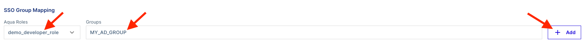

RBAC Guide
Overview
The purpose of this document is to provide guidance on how to leverage permission sets, roles, and application scopes to create an RBAC model that works for the organization.
Important
Consult the organization's security team when mapping out the permission sets, roles and application scopes to align administrative and security teams towards a common goal
User Login
Tip
SSO Integration would be ideal for proceeding with this document, but it is not required
Users who login to the Aqua Console will be assigned a role which is assigned a permission set and can be bound to a specific application scope or be set to the Global application scope. Below is an illustration of how a user permission can look like.
flowchart LR
subgraph Login
id1["Users"] --> id2["Login"] --> id3["Aqua Role Assignment"]
end
subgraph Permissions & Access
id3 --> id4["Permission Sets"]
id3 --> id5["Application Scope"]
end
subgraph Resources
id5 -- Global --> id6["All Resources"]
end
subgraph Scoped Resources
id5 -- Custom Application Scope --> id7["Scoped Resources"]
endNote
Multiple application scopes can be assigned to an Aqua Role. Be careful on the addition of multiple Application Scopes, it may provide a user more access to resources they do not need to see.
In the next few sections we will breakdown how it all pieces together to provide a user access to resources. We will start with application scopes to scope resources and view granularity, followed by permission sets to illustrate the possible permissions, and finally the Aqua Role describing the possible management of delegating access to resources leveraging an Aqua Role.
Application Scopes
Application Scopes are used to granularize access to specific resources within the environment. Application Scopes are broken down into 3 parts
- Artifacts
- Workloads
- Infrastructure
These components breakdown the ecosystem into registries, running workloads, and clusters/VMs hosting the containers. For more information see the References section for application scopes
Artifacts
Artifacts grant the access to the container registries, repositories, and images that are configured within the Aqua Console. This section will focus on the image attribute of Artifacts.
-
To access Application Scopes navigate to Administration > Application Scopes

-
Click on Add Scope on the top right

-
The configuration for the application scope will appear, enter the following:
- Name - Name of the Application Scope
- Description - Description of the scope, be it team or service, or groups of services
- Owner Email - Creator of the Application Scope

-
Ensure the middle icon (image) is selected, there are two ways to scope access to repostories & images.
- Add the registry, this method will allow everything in the registry to be visible when the scope is assigned.
- Add the registry and include a repository, many repository, a specific image within a repository or many images within the repository

{kind=link}
Once the access is granted for the Artifacts section, we can move to Workloads and Infrastructure
Workloads
Workloads pertain to the running workloads within the environment, these can be scoped to kubernetes, enforcer group, and more. For additional details see Application Scopes under the Reference section. For the example we will be using Kubernetes as the Workloads attribute.
-
Follow the first two steps from the Artifacts section to navigate to the application scope, configure the workload section.
-
Similar to the Artifacts there are two ways to configure Workloads
- Add the cluster name only which will grant access to all namespaces

- Add the cluster name and one or more namespace names

- Add the cluster name only which will grant access to all namespaces
Note
Multiple namespaces can be added to workloads, ensure that caution is taken when adding various namespaces. More access can accidentily be granted than intended
Once the desired state is complete, we can move on to Infrastructure
Infrastructure
Infrastructure consists of a wide range of services, from Kubernetes to the Enforcer Group with different attributes such as subcription or account ID. or additional details see Application Scopes under the Reference section. For the example we will be using Kubernetes as the type.
{kind=link}
- Verify the cluster has been added

Many clusters can be added to this scope if needed. Once this portion is completed we can review what the full Application Scope looks like in the next section.
Completed Application Scope
The Application Scope has been configured with
- Artifacts
- Workloads
- Infrastructure
{kind=link}
This completes the creation of the Application Scope.
Permission Sets
Permission sets provide the access to a given features or components within Aqua. They are broken down into 4 categories
- Policies
- Assets
- Compliance
- System
Various roles can be created and granular permissions applied to narrow down what users have access to, this can also be scoped to provide access to both UI & API or simply the API Only

This section will create a sample developer permission set to provide an example of granularity that can be achieved with permission sets.
Important
The role that will be created is a sample role, it may or may not be usable in your environment. Refer to your organizational policies when creating permission sets
Use Case
Create a developer role that will allow them to see vulnerabilities and Aqua Services
To create permission sets:
- SaaS: Navigate to the Aqua menu on the top left and select Account Management

- Select Permission Sets and click on Add Permission Set

- Select Permission Sets and click on Add Permission Set
- Self-Hosted: Navigate to Administration > Access Management > click on the Permission Sets > Add Permission Set
{kind=link}
The name, description and if the permission set can be used by both UI & API or simply API Only.
Name: demo_developer_permission_set Description: This permission set will allow developers to see vulnerabilities, workloads, and services Access Type: UI & API

Permissions will be added for the following categories
- Policy
- Assets
- Compliance
The following illustrates the permissions for each category and will be granted view permissions only.
| Policies | Assets | Compliance | Permission |
|---|---|---|---|
| Firewall Policies | Dashboard | Vulnerabilities | View |
| Risk Explorer | CIS Benchmarks | View | |
| Images | View | ||
| Enforcers | View | ||
| Containers | View | ||
| Services | View |
The permissions show a count of enabled permissions for Edit, View Only, and permissions Not Set
{kind=link}
Assets

Compliance

This completes the creation and permission assignments for the Permission Set. It can now be assigned to an Aqua Role
Aqua Roles
Aqua Roles are used to grant permissions to users or groups within the Aqua UI or API. They leverage permission sets to allocate permissions to resources and Aqua features.
In this example an Aqua Role will be created and utilize the permission set created in the previous section Permission Sets
Creating the Aqua Role
-
SaaS: Navigate to the Aqua menu on the top left and select Account Management
{kind=link}
- Self-Hosted: Navigate to Administration > Access Management > click on the Roles > Add Role

Once the screen changes to create the role, we will define the following:
- Name
- Description
- Permission Set
- Application Scope(s)

Note
Multiple Application Scopes can be added to a role, ensure that the Application Scopes created are well documented to ensure just enough access is granted for the organizational users
The Aqua Role is created and now can be assigned to users!
SSO Role Mapping
Important
SSO Integration must be completed and functional with assertions for users/groups being passed through prior to utilizing SSO Group Mapping
The prerequisites for RBAC have been created with the Permission Sets, Aqua Roles, and Application Scopes. Users or groups can now be onboarded and scoped to the roles that will grant them access to their resources.
Navigate to:
-
SaaS: Navigate to the Aqua menu on the top left and select Account Management
-
Under User Management, click on SSO Group Mapping

- To map a role select the Aqua Role to map to a Groups, and click Add 
-
{kind=link}
{kind=link}
-
Self-Hosted: Navigate to Administration > Integrations > click on the SSO Authentication > Role Mapping

- To map a role, start typing the name of the Aqua Role > type the Groups and click Add. Once completed click Save at the bottom of the page.


- To map a role, start typing the name of the Aqua Role > type the Groups and click Add. Once completed click Save at the bottom of the page.
This concludes how to create Application Scopes, Aqua Roles, Permission Sets, and configure them to work together to provide granularity across groups or individual users.
Important
If there are any issues, please contact Aqua Support
References
- Application Scopes
- RBAC
- Permission Sets
- SSO Group Mapping